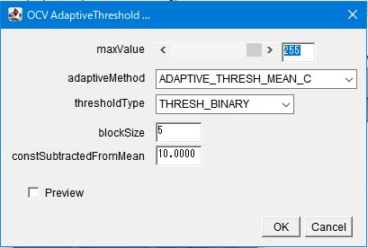
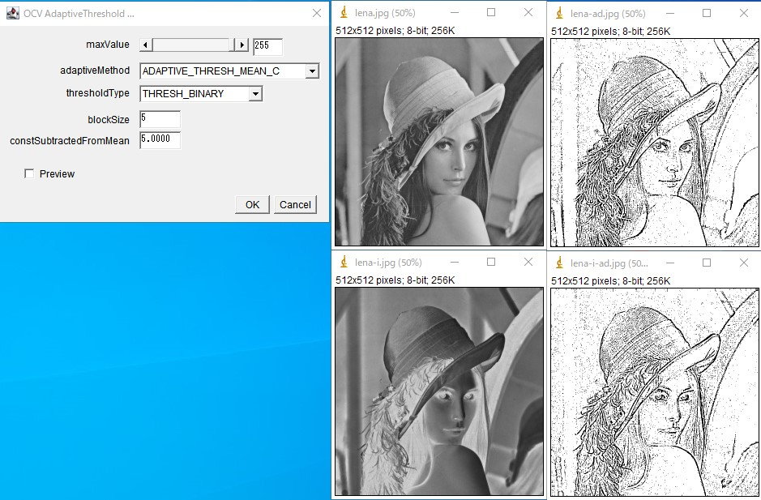

31st December 2025 at 10:53pm
OCV_AdaptiveThreshold（適応的閾値処理）
1. 概要：画像処理の仕組み
画像全体で一つの閾値を用いる通常の二値化とは異なり、各ピクセルの周囲（局所領域）の明るさを分析して、場所ごとに最適な閾値を自動決定します。 これにより、照明ムラ（一部が極端に明るい、または暗い）がある写真でも、全域にわたってきれいに物体を切り出すことが可能になります。
2. GUIの使い方

- maxValue: 閾値条件を満たした箇所に割り当てる輝度値です（通常は255）。
- adaptiveMethod: 閾値計算のアルゴリズムを「平均値（MEAN）」か「ガウス加重平均（GAUSSIAN）」から選択します。
- thresholdType: 二値化の出力形式（通常 または 白黒反転）を選択します。
- blockSize: 閾値を計算するために参照する近傍のサイズです。
- constSubtractedFromMean: 計算された平均値から差し引く定数です。ノイズの除去具合を調整します。
3. 実際の処理
以下の画像処理が行われています。
- ADAPTIVE_THRESH_MEAN_C（単純な平滑化）、ADAPTIVE_THRESH_GAUSSIAN_C（ガウシアンフィルタによる平滑化）のどちらかを選択します。
- 元画像を上記で設定した方法で平滑化します。カーネルのサイズはblockSizeです。
- 元画像と平滑化画像の差分処理を行います。
- 差分画像をconstSubstractedFromMeanで指定した閾値で2値化します。
差分画像は0近傍の画像になります。輝度変化により輝度が生じますので、constSubstractedFromMeanで指定した閾値で2値化します。ただし、正の変化しか出力されないので注意してください。
所望のエッジが負の変化の場合は、画像の輝度を反転してから（Edit ⇒ Invert）、本処理を行ってみてください。
ダイアログのthreshholdTypeのTHRESH_BINARY_INVは、最後の2値化での反転なので注意してください。

4. 注意点
- 8-bit Grayscale 画像専用です。
blockSizeは必ず 3以上の奇数 を指定してください。偶数や1以下の値を入力するとエラーになります。